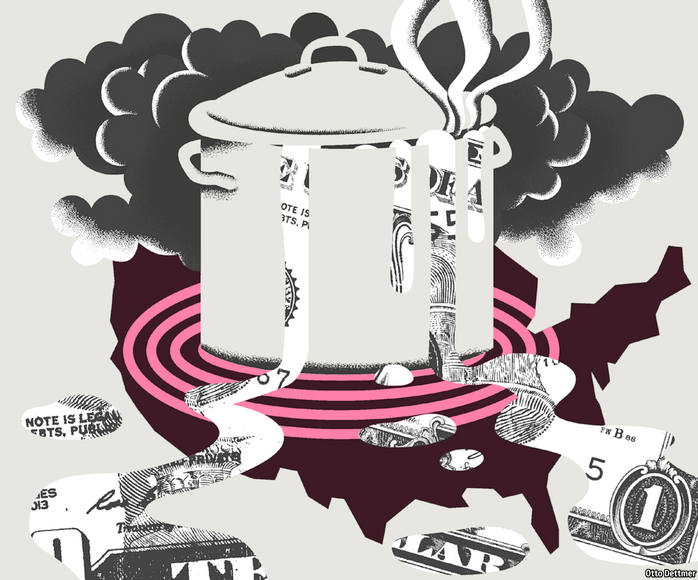

2021-03-03T14:54:20+00:00
自由交流
热力四射
如果美国经济过热，世界其他地区会如何？
美国打个喷嚏，全世界都会感冒。但如果美国发烧了，会怎样？美国在2020年GDP下跌了3.5％，经过这艰难的一年后，其经济势将在2021年强劲反弹——只要随着疫苗接种的推进恢复到近似正常的状态就能实现。但是，美国经济可能不止是反弹。如果拜登的新冠疫情救济法案获通过，那么今年的刺激方案总规模可能会超过2.5万亿美元。这可能会轻易推动经济产出超过美国国会预算办公室（Congressional Budget Office）估计的“潜在”水平，也就是不会增加通胀压力的产出上限。这种可能性让一些美国的经济学家开始警惕物价和工资增长提速的迹象。但美国经济不是在真空中运行。如果过热，其影响将不会局限于美国国内。一个火热的美国经济可能是世界其余地区的福音，也可能是又一个麻烦的源头——全看这场复苏如何发展。
在一个不与世界其他地区开展贸易的封闭经济体中，支出太少会导致失业并给物价带来下行压力，支出过多则会增加就业，最终推高物价。但在一个开放的经济体中，需求变动的某些影响会溢出到世界其他地区。例如，支出急剧下降可能引发对进口产品的需求大幅下降，在这种情况下，经济下滑的部分痛苦就会输出到国外。在2007年至2009年全球金融危机期间，金融市场的麻烦震撼全球，但即使是在相对而言隔绝于这些金融风暴之外的国家，由于和美国及欧洲存在贸易联系，也感到了阵阵寒意。一项估计认为，在贸易的传导下，美国需求下降的约四分之一和欧洲需求下降的五分之一都落在了其他经济体头上。
需求提振应该会有类似的效应，只是方向相反。随着美国人支出增加，其中一些会流向国外，比如购买外国商品，或者花在包括旅游在内的服务上——疫情限制措施开始解除后旅游业应该会开始反弹。国际货币基金组织2017年发布的对财政政策溢出效应的分析发现，美国一项刺激政策在第一年让其他国家的经济产出平均提高了0.33％，该政策主要以支出（而非减税）为主，相当于GDP的1％。与美国贸易联系更紧密的国家受到的影响更大，例如对加拿大经济的利好作用估计为平均水平的近三倍。如果经济重启加上刺激措施能鼓舞美国的消费者，那么全世界可能都会很快感受到这种影响。
但是，感受有多深与国内外采取的响应政策息息相关。当受影响国的经济低于潜在产出水平时，财政溢出的影响会更强。因此，如果美国的复苏远强于其贸易伙伴，那么美国的支出就更有可能溢出到世界其他地区。通常，溢出效应的存在是各国政府想要在彼此间协调刺激力度的强大诱因，以避免被一些财政收紧的国家（例如欧洲某些经济体）搭了更慷慨撒钱的国家的便车。实际上，在2月12日，美国财政部长珍妮特·耶伦（Janet Yellen）敦促七国集团国家的财长也“加大”刺激力度。搭便车的国家可能会被耶伦找麻烦，因为拜登政府已承诺对那些长期对美保持高额贸易顺差的国家采取严厉态度。
但是，如果美国经济确实接近过热，那么把钱花到了其他国家这件事可能就不像往常那么叫人讨厌了，因为需求不足的国家充当了美国国内压力积聚的泄压阀。美联储的简·伊里格（Jane Ihrig）、史蒂文·卡明（Steven Kamin）、黛博拉·林德纳（Deborah Lindner）和海梅·马奎兹（Jaime Marquez）的研究表明，全球贸易的增长似乎增强了它缓解压力的能力。他们认为，贸易增长已经削弱了内需变化与总产出相应变化之间的联系，因为净出口对国内支出的变化起到了更大的调节作用。例如，在上世纪90年代后期，内需指标的增长速度甚至超过了实际GDP（其本身也在快速增长）。但通胀仍然相对较低，一定程度上是因为美国经常账户赤字激增。同样，今年进口的激增可能会消除美国潜在的通胀压力，同时让其经济较疲弱的贸易伙伴获得提振。
必要的溢出
关于美国经济过热对全球影响的最大不确定性是美联储的反应。麻省理工学院的克里斯汀·福布斯（Kristin Forbes）近期的研究表明，随着时间的推移，国内通胀已变得对全球因素（包括全球经济的整体低迷程度）更为敏感。不过，工资上涨势头似乎仍然主要与国内状况相关。因此，美联储可能不会太紧张今年稍后的价格上涨，认为在美国就业市场以及世界经济完全复苏之前，短期价格压力不会转变为持续的通胀。一个鸽派的美联储应该会令美元走弱，让全球金融状况更为宽松，从而在美国人购买更多国外商品带来的增长之上再添一把火。
但如果经济实在太热，特别是如果经常账户赤字激增和资产价格飞涨导致美联储担心金融风险加剧的话，它的耐心可能就会受到考验。对美国大幅加息的预期挥之不去，这可能会令全球市场惧怕，迫使新兴经济体采取刺激性较小的财政和货币政策。相比之下，美国溢出一些需求的好处就会显得无足轻重了。美联储似乎仍然不太可能突然转变成鹰派。但是，如果美国经济发热到一定程度，世界其他地方可能就会冒冷汗了。
2021-03-03T14:54:20+00:00
Free exchange
Radiant energy
If America’s economy runs hot, what happens to the rest of the world?
WHEN AMERICA sneezes, the rest of the world catches a cold. But what happens when it runs a fever? After a trying 2020 in which GDP fell by 3.5%, America is poised to enjoy a robust rebound in 2021 simply by returning to something like normal as vaccination proceeds. Yet it might manage more than just that. If President Joe Biden’s covid-19 relief bill is enacted, total stimulus this year may exceed $2.5trn. That could easily push output above what the Congressional Budget Office estimates to be its “potential” level: that is, the amount the economy can produce without an increase in inflationary pressure. This possibility has some American economists on the lookout for signs of accelerating growth in prices and wages. America does not operate in a vacuum, however; should overheating occur, its effects will not be confined within its borders. Depending on how the recovery plays out, a hot American economy could be a boon for the rest of the world—or yet another source of concern.
In a closed economy that does not trade with the rest of the world, too little spending leads to job losses and downward pressure on prices, whereas too much should push up employment and, eventually, prices. In an open economy, however, some of the effects of the shifts in demand spill over to the rest of the world. A sharp drop in spending, for instance, may be associated with plunging demand for imports, in which case some of the pain of a slump is exported abroad. During the global financial crisis of 2007-09, troubles in financial markets wreaked havoc all over the world, but even countries relatively insulated from those woes felt a chill thanks to trade links with America and Europe. According to one estimate, about a quarter of the drop in American demand and a fifth of the fall in European demand was borne by other economies, and transmitted through trade.
A boost to demand ought to work in a similar way, but in the other direction. As Americans spend more, some of it leaks abroad: through purchases of foreign goods, for example, or spending on services—including tourism, which should begin to rebound as pandemic restrictions are lifted. An analysis of fiscal-policy spillovers published by the IMF in 2017 found that an American stimulus consisting mostly of spending (as opposed to tax cuts) and worth 1% of GDP raises the output of the average country by 0.33% in the first year. Countries with closer trade ties experience bigger effects; the fillip to Canada’s economy is estimated to be almost three times the average, for example. If the combination of reopening and stimulus invigorates the American consumer, the effects could quickly be felt all over the world.
The degree to which it is felt, however, depends crucially on the policy response, both at home and abroad. Fiscal spillovers are more powerful when recipient countries are themselves operating below potential. American spending is thus more likely to spill over to the rest of the world if its recovery is much stronger than those of its trading partners. Ordinarily, spillovers provide a strong incentive for governments to co-ordinate their stimulus efforts—lest some tight-fisted economies (eg, those in Europe) free ride on the largesse leaking from more generous ones. Indeed, on February 12th Janet Yellen, America’s treasury secretary, urged her counterparts in the G7 group of countries to “go big” on stimulus, too. Countries that free ride could find themselves in hot water with Ms Yellen: the Biden administration has promised to be stern with countries that run large, persistent trade surpluses.
But if America does come close to overheating, then a reluctance to spend elsewhere may be less irksome than usual, as demand-starved countries serve as a release valve for the pressure building up at home. Growth in global trade seems to have enhanced its pressure-relieving capabilities, according to work by Jane Ihrig, Steven Kamin, Deborah Lindner and Jaime Marquez of the Federal Reserve. They reckon that the expansion in trade has served to weaken the link between changes in domestic demand and corresponding shifts in total output, with net exports bearing more of the burden of adjustment to changes in domestic spending. In the late 1990s, for instance, measures of domestic demand grew even faster than real GDP (which was itself growing at a rapid clip). Inflation remained relatively subdued, however, in part because America’s current account deficit swelled. Similarly, a surge in imports this year might dissipate potential inflationary pressures in America while giving a lift to its weaker trade partners.
Built to spillover
The biggest uncertainty about the global effects of a hot American economy is the reaction of the Fed. Recent work by Kristin Forbes of the Massachusetts Institute of Technology suggests that domestic inflation has become more responsive over time to global factors—including the amount of economic slack across the global economy as a whole. Yet wage inflation still seems to respond mostly to domestic conditions. The Fed might therefore shrug off price rises later this year, reckoning that short-run price pressures will not translate into sustained inflation until America’s job market, and the world economy, is fully recovered. A doveish Fed should make for a weaker dollar and easier financial conditions worldwide, adding to the boost that comes from Americans buying more goods from abroad.
But a really rip-roaring economy could test the Fed’s patience, particularly if a yawning current account deficit and soaring asset prices cause it to worry about a build-up of financial risk. The spectre of American interest-rate hikes could frighten global markets, and force emerging economies to adopt less stimulative fiscal and monetary policies. A bit of demand spilling over from America would seem insignificant in comparison. That the Fed will suddenly turn hawkish still seems unlikely. But if America’s temperature runs high enough, the rest of the world may break out in cold sweats. ■
2021-03-03T14:54:20+00:00
自由交流
熱力四射
如果美國經濟過熱，世界其他地區會如何？
美國打個噴嚏，全世界都會感冒。但如果美國發燒了，會怎樣？美國在2020年GDP下跌了3.5％，經過這艱難的一年後，其經濟勢將在2021年強勁反彈——只要隨着疫苗接種的推進恢復到近似正常的狀態就能實現。但是，美國經濟可能不止是反彈。如果拜登的新冠疫情救濟法案獲通過，那麼今年的刺激方案總規模可能會超過2.5萬億美元。這可能會輕易推動經濟產出超過美國國會預算辦公室（Congressional Budget Office）估計的“潛在”水平，也就是不會增加通脹壓力的產出上限。這種可能性讓一些美國的經濟學家開始警惕物價和工資增長提速的跡象。但美國經濟不是在真空中運行。如果過熱，其影響將不會局限於美國國內。一個火熱的美國經濟可能是世界其餘地區的福音，也可能是又一個麻煩的源頭——全看這場復蘇如何發展。
在一個不與世界其他地區開展貿易的封閉經濟體中，支出太少會導致失業並給物價帶來下行壓力，支出過多則會增加就業，最終推高物價。但在一個開放的經濟體中，需求變動的某些影響會溢出到世界其他地區。例如，支出急劇下降可能引發對進口產品的需求大幅下降，在這種情況下，經濟下滑的部分痛苦就會輸出到國外。在2007年至2009年全球金融危機期間，金融市場的麻煩震撼全球，但即使是在相對而言隔絕於這些金融風暴之外的國家，由於和美國及歐洲存在貿易聯繫，也感到了陣陣寒意。一項估計認為，在貿易的傳導下，美國需求下降的約四分之一和歐洲需求下降的五分之一都落在了其他經濟體頭上。
需求提振應該會有類似的效應，只是方向相反。隨着美國人支出增加，其中一些會流向國外，比如購買外國商品，或者花在包括旅遊在內的服務上——疫情限制措施開始解除後旅遊業應該會開始反彈。國際貨幣基金組織2017年發布的對財政政策溢出效應的分析發現，美國一項刺激政策在第一年讓其他國家的經濟產出平均提高了0.33％，該政策主要以支出（而非減稅）為主，相當於GDP的1％。與美國貿易聯繫更緊密的國家受到的影響更大，例如對加拿大經濟的利好作用估計為平均水平的近三倍。如果經濟重啟加上刺激措施能鼓舞美國的消費者，那麼全世界可能都會很快感受到這種影響。
但是，感受有多深與國內外採取的響應政策息息相關。當受影響國的經濟低於潛在產出水平時，財政溢出的影響會更強。因此，如果美國的復蘇遠強於其貿易夥伴，那麼美國的支出就更有可能溢出到世界其他地區。通常，溢出效應的存在是各國政府想要在彼此間協調刺激力度的強大誘因，以避免被一些財政收緊的國家（例如歐洲某些經濟體）搭了更慷慨撒錢的國家的便車。實際上，在2月12日，美國財政部長珍妮特·耶倫（Janet Yellen）敦促七國集團國家的財長也“加大”刺激力度。搭便車的國家可能會被耶倫找麻煩，因為拜登政府已承諾對那些長期對美保持高額貿易順差的國家採取嚴厲態度。
但是，如果美國經濟確實接近過熱，那麼把錢花到了其他國家這件事可能就不像往常那麼叫人討厭了，因為需求不足的國家充當了美國國內壓力積聚的泄壓閥。美聯儲的簡·伊里格（Jane Ihrig）、史蒂文·卡明（Steven Kamin）、黛博拉·林德納（Deborah Lindner）和海梅·馬奎茲（Jaime Marquez）的研究表明，全球貿易的增長似乎增強了它緩解壓力的能力。他們認為，貿易增長已經削弱了內需變化與總產出相應變化之間的聯繫，因為凈出口對國內支出的變化起到了更大的調節作用。例如，在上世紀90年代後期，內需指標的增長速度甚至超過了實際GDP（其本身也在快速增長）。但通脹仍然相對較低，一定程度上是因為美國經常賬戶赤字激增。同樣，今年進口的激增可能會消除美國潛在的通脹壓力，同時讓其經濟較疲弱的貿易夥伴獲得提振。
必要的溢出
關於美國經濟過熱對全球影響的最大不確定性是美聯儲的反應。麻省理工學院的克里斯汀·福布斯（Kristin Forbes）近期的研究表明，隨着時間的推移，國內通脹已變得對全球因素（包括全球經濟的整體低迷程度）更為敏感。不過，工資上漲勢頭似乎仍然主要與國內狀況相關。因此，美聯儲可能不會太緊張今年稍後的價格上漲，認為在美國就業市場以及世界經濟完全復蘇之前，短期價格壓力不會轉變為持續的通脹。一個鴿派的美聯儲應該會令美元走弱，讓全球金融狀況更為寬鬆，從而在美國人購買更多國外商品帶來的增長之上再添一把火。
但如果經濟實在太熱，特別是如果經常賬戶赤字激增和資產價格飛漲導致美聯儲擔心金融風險加劇的話，它的耐心可能就會受到考驗。對美國大幅加息的預期揮之不去，這可能會令全球市場懼怕，迫使新興經濟體採取刺激性較小的財政和貨幣政策。相比之下，美國溢出一些需求的好處就會顯得無足輕重了。美聯儲似乎仍然不太可能突然轉變成鷹派。但是，如果美國經濟發熱到一定程度，世界其他地方可能就會冒冷汗了。